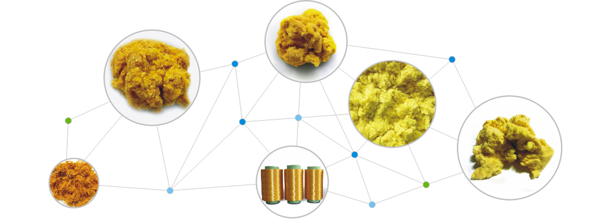

新型复合材料研发与制造先行者
新纶科技-高性能纤维事业本部下属公司成都新晨新材科技有限公司，位于成都新津工业园，公司主营高性能纤维的研究生产及深加工，产品包括PBO超级纤维和芳纶1414短纤维。侯德纶（英文：Houdelen）是成都新晨新材科技有限公司PBO纤维品牌。PBO纤维中文名为聚对苯撑苯并双噁唑纤维，是为满足航空航天材料的需要而设计和研究出的新一代高分子材料，具有超高强度、超高模量 、超高耐热性、超阻燃性，被誉为“21世纪超级纤维”。

PBO超级纤维主要有长丝、卷曲短纤、超短切、浆粕等产品形态，主要应用于航空航天、轨道交通、汽车制造、安全防护等核心行业；芳纶1414短纤维包括浆粕和超短切产品，广泛用于高性能电气绝缘、印刷线路板及电磁波防护、特种造纸、摩擦密封材料以及塑料橡胶增强改性材料等领域。


...

成都基地
成都市新津工业园区B区兴化10路366号新纶科技PBO产业园
(86)28-8550 2730
(86)28-8550 3762